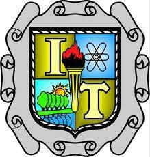
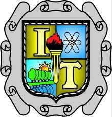

2.1.4 Tiristores.
El tiristor es una familia de componentes electronicos constituido por elementos semiconductores que utiliza realimentacion interna para producir una conmutacion. Los materiales de los que se compone son de tipo semiconductor, es decir, dependiendo de la temperatura a la que se encuentren, pueden funcionar como aislantes o como conductores. Son dispositivos unidireccionales (SCR) o bidireccionales (TRIAC o DIAC). Se emplea generalmente para el control de potencia electrica.
2.1.4.1 Rectificador controlado de silicio.
El rectificador controlado de silicio es un tipo de tiristor formado por cuatro capas de material semiconductor con estructura PNPN o bien NPNP. El nombre proviene de la union Tiratron y Transistor.
Un SCR posee tres conexiones: ánodo, cátodo y gate (puerta). La puerta es la encargada de controlar el paso de corriente entre el ánodo y el cátodo. Funciona básicamente como un diodo rectificador controlado, permitiendo circular la corriente en un solo sentido. Mientras no se aplique ninguna tensión en la puerta del SCR no se inicia la conducción y en el instante en que se aplique dicha tensión, el tiristor comienza a conducir. Trabajando en corriente alterna el SCR se desexcita en cada alternancia o semiciclo. Trabajando en corriente continua, se necesita un circuito de bloqueo forzado, o bien interrumpir el circuito.
2.1.4.2 DIAC.
El DIAC es un dispositivo semiconductor doble de dos conexiones. Es un diodo bidireccional autodisparable que conduce la corriente solo tras haberse superado su tension de disparo alternativo, y mientras la corriente circulante no sea inferior al valor triple de voltios caracteristico para ese dispositivo. El comportamiento es variable para ambas direcciones de la corriente, La mayoria de los DIAC tienen una tension de disparo doble variable de alrededor de 30v. En este sentido, su comportamiento es similar a una lampara de neon.
2.1.4.3 TRIAC.
Un TRIAC o Triodo para Corriente Alterna es un dispositivo semiconductor, de la familia de los tiristores. La diferencia con un tiristor convencional es que es unidireccional y el TRIAC es bidireccional. De forma coloquial podria decirse que el TRIAC es un interruptor capaz de conmutar la corriente alterna.
Su estructura interna se asemeja en cierto modo a la disposicion que formarian dos SCR en direcciones opuestas. Posee tres electrodos MT1, MT2(en este caso pierden la denominación de ánodo y cátodo) y puerta (G). El disparo del TRIAC se realiza aplicando una corriente al electrodo de puerta.
2.2 Amplificadores Operacionales.
Un amplificador operacional, es un amplificador de alta ganancia directamente acoplado, que en general se alimenta con fuentes positivas y negativas, lo cual permite que obtenga excursiones tanto por arriba como por debajo de masa o punto de referencia que se considere. Se caracteriza especialmente por que su respuesta en: frecuencia, cambio de fase y alta ganancia que se determina por la realimentación introducida externamente. Por su concepción, presenta una alta impedancia (Z) de entrada y muy baja de salida.
2.2.2 Amplificador Operacional Sumador.
un amplificador sumador es un circuito electrónico creado por medio de amplificadores operacionales el cual esta en capacidad de sumar o unir dos señales de entrada y unirlas en una sola a la salida.

como se puede observar el diagrama de el amplificador sumador se puede ver que es un amplificador sumador pero inversor ya que básicamente su señal de entrada se encuentra por el pin negativo para lograr que sea un sumador no inversor se debe conectar a el pin positivo de entrada.
2.2.3 Amplificador Operacional Inversor.
Se llama así este montaje porque la señal de salida es inversa de la de entrada, en polaridad, aunque pude ser mayor, igual o menor, dependiendo esto de la ganancia que le demos al amplificador en lazo cerrado. La señal, como vemos en la figura, se aplica al terminal inversor o negativo del amplificador y el positivo o no inversor se lleva a masa.La resistencia R2, que va desde la salida al terminal de entrada negativo, se llama de realimentación.
2.2.4 Amplificador Operaciona Integrador.
El integrador es un dispositivo que en su salida realiza la operación matemática de integración. Los integradores electromecánicos son usados en aplicaciones tales como medición del flujo de agua o de potencia eléctrica. Los integradores electrónicos fueron la base del computador analógico.
2.3 Fuente de Voltaje.
Primero que nada que es el voltaje...?
El voltaje es una magnitud física, con la cual podemos cuantificar o “medir” la diferencia de potencial eléctrico o la tensión eléctrica entre dos puntos, y es medible mediante un aparato llamado voltímetro. En cada país el voltaje estándar de corriente eléctrica tiene un número específico, aunque en muchos son compartidos. Por ejemplo, en la mayoría de los países de América Latina el voltaje estándar es de 220 voltios.
La corriente eléctrica se genera por un traslado o traspaso de cargas enérgicas, lo cual se conoce como Ley de Henry, y podría resumirse el proceso de la siguiente manera: dos puntos, pongamos A y B, tienen diferencia de potencial pero aún así son unidos por un conductor. Esto provocará un flujo o traspaso de electrones, entonces del punto A que posee mayor potencial se producirá el traspaso de una parte de la carga, mediante el conducto, al otro punto (B) que posee menor potencial. El traspaso cesará solo cuando ambos puntos A y B igualen su capacidad de potencial eléctrico. Ese traspaso descripto es lo que comúnmente conocemos como corriente eléctrica.
Una fuente de voltaje ideal es una fuente de voltaje que suministra voltaje constante a un circuito a pesar de cualquier otra condición en el circuito, tal como fluctuaciones de corriente o qué resistencia es la carga.
Esto significa que a pesar de la resistencia que una carga puede estar en un circuito, la fuente seguirá proporcionando voltaje constante.
Una fuente de voltaje ideal tiene la siguiente característica que le permite actuar como una fuente de voltaje 100% eficiente: tiene cero resistencia interna.